方式二：Linux
适合脚本化部署、研发环境和自动化流水线；含 Server CLI、Docker 与 Desktop GUI 三种路径。
返回总览：安装教程总览
Linux CLI
一、环境要求
在 Ubuntu 22.04 LTS Server 上通过 CLI 安装 OpenAkita：使用 Python 3.11 虚拟环境、阿里云 PyPI 镜像安装完整功能包，并完成初始化与首次运行。
| 项目 | 说明 |
|---|---|
| 系统 | Ubuntu 22.04 LTS Server（已联网） |
| 权限 | 具备 sudo 的普通用户 |
| Python | 3.11+（本教程固定使用 3.11） |
| API Key | 至少配置一个 LLM 提供商密钥 |
| 磁盘 | 推荐20 GB 及以上 |
说明：openakita支持Python3.11及以上版本，例如Ubuntu 22.04 默认自带 Python 3.10，所以要重新安装Python3.11；而Ubuntu24.04 默认自带 Python 3.12，可以直接使用。
二、安装步骤
1. 更新软件源并安装基础工具
sudo apt update2. 添加 deadsnakes PPA
software-properties-common 提供 add-apt-repository，用于添加第三方 PPA
Ubuntu 22.04 官方源里 Python 3.11 的可用版本为3.11.0~rc1，为不稳定版本，可用deadsnakes PPA装3.11.15等稳定的版本。
sudo apt install -y software-properties-common
sudo add-apt-repository -y ppa:deadsnakes/ppa
sudo apt update3. 安装 Python 3.11 与编译依赖
sudo apt install -y \
python3.11 \
python3.11-venv \
python3.11-dev \
python3-pip \
build-essential \
git \
curl| 包名 | 作用 |
|---|---|
python3.11 | Python 3.11 解释器 |
python3.11-venv | 虚拟环境模块 |
python3.11-dev | 头文件与静态库（编译部分依赖时需要） |
build-essential | gcc/make 等编译工具链 |
git / curl | 克隆仓库、下载脚本等 |
验证版本：
python3.11 --version
# 应显示 Python 3.11.x4. 创建工作目录与虚拟环境
mkdir -p ~/openakita
cd ~/openakita
python3.11 -m venv venv
source venv/bin/activate激活成功后，命令行提示符前会出现 (venv)
5. 安装 OpenAkita（含全部可选扩展）
查看可安装的openakita版本
pip index versions openakita安装对应的openakita版本
方式 A：安装最新版本
pip install "openakita[all]"方式 B：安装指定版本
pip install "openakita[all]==<版本号>"方式 C：使用阿里云镜像加速（国内服务器推荐）：
pip install "openakita[all]" \
-i https://mirrors.aliyun.com/pypi/simple/ \
--trusted-host mirrors.aliyun.com验证安装：
openakita --version
# 或
openakita --help6. 初始化配置
在 已激活 venv 且位于 ~/openakita 目录下执行：
#快速配置
openakita init --quick
#完整配置
openakita init向导会引导配置 LLM 端点、API Key、工作区等。Server 上请确保终端可交互（SSH 直连一般没问题）。
若提示不支持 --quick，改用 openakita init，或执行 openakita init --help 查看当前版本支持的参数。
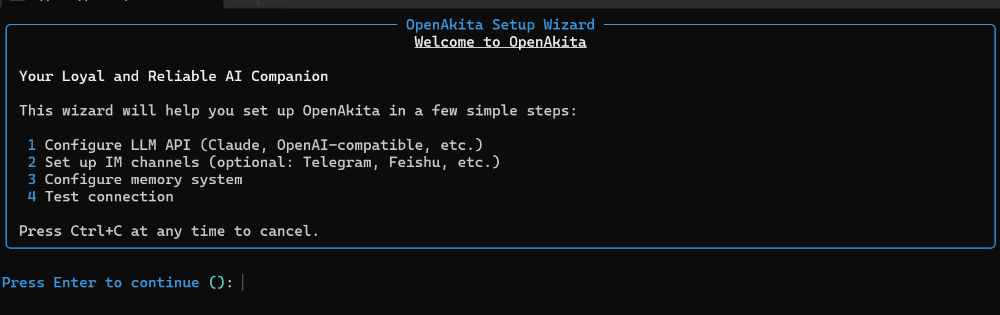
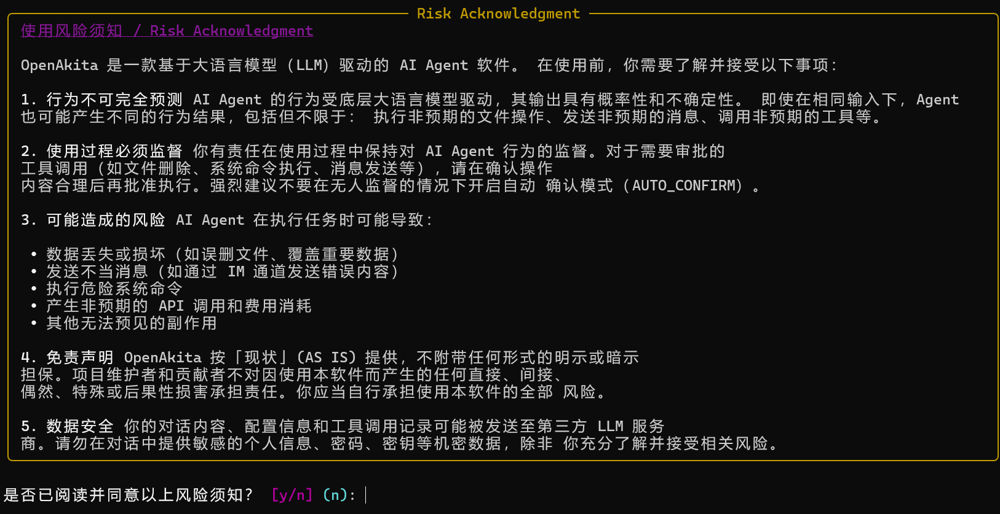
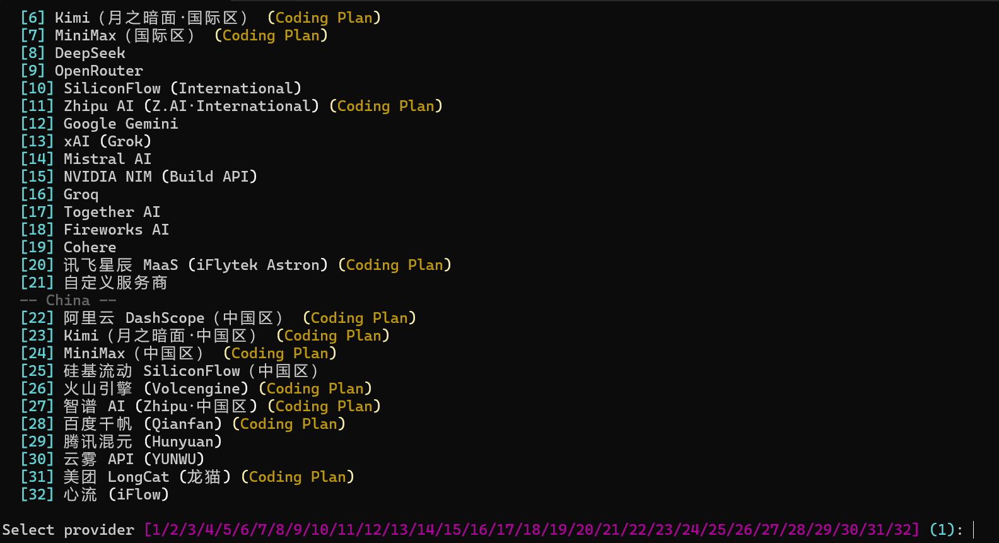


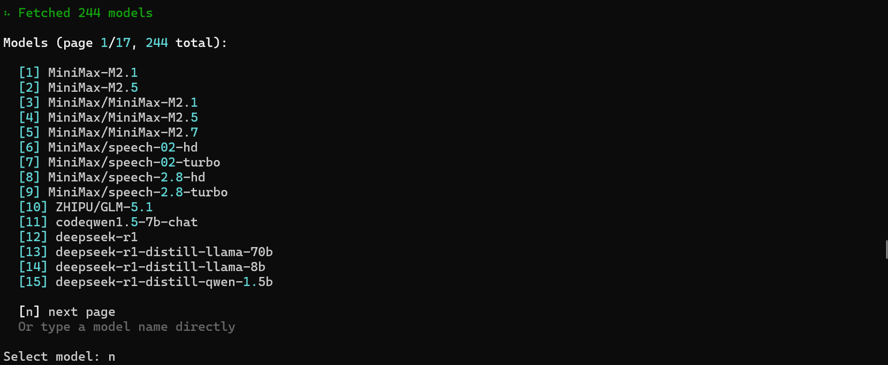
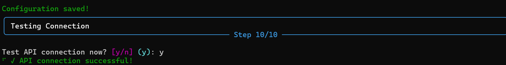
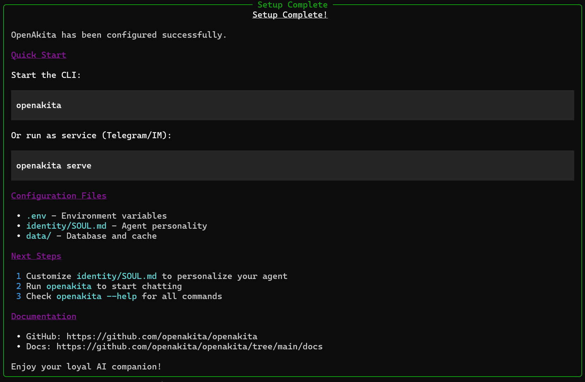
三、首次运行
方式一：进入交互式 CLI
openakita在 You> 提示符下输入任务，回复如下：
run "你好，介绍一下你自己"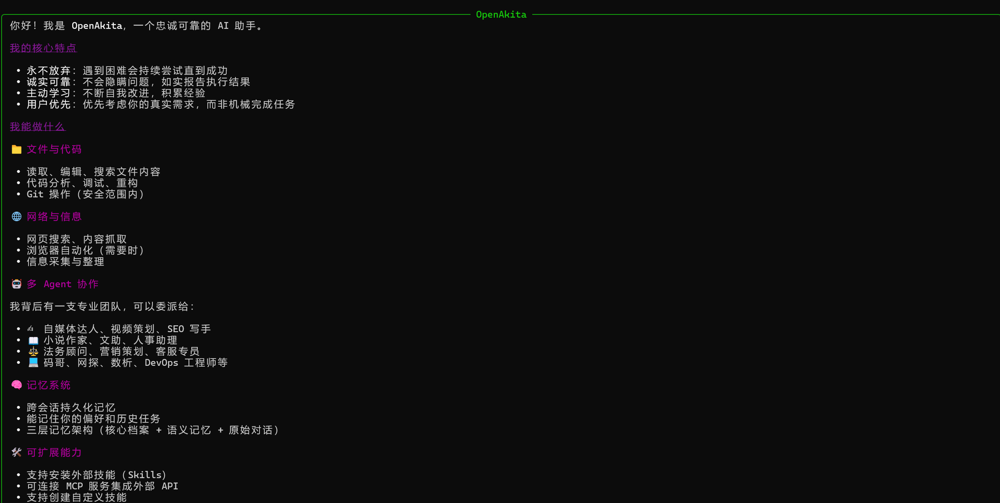
退出交互模式一般使用/exit 或按界面提示操作。
方式二：浏览器访问
openakita serve地址（默认端口）：
http://<本机IP>:18900本机 IP：
ip a例：192.168.xxx.xxx
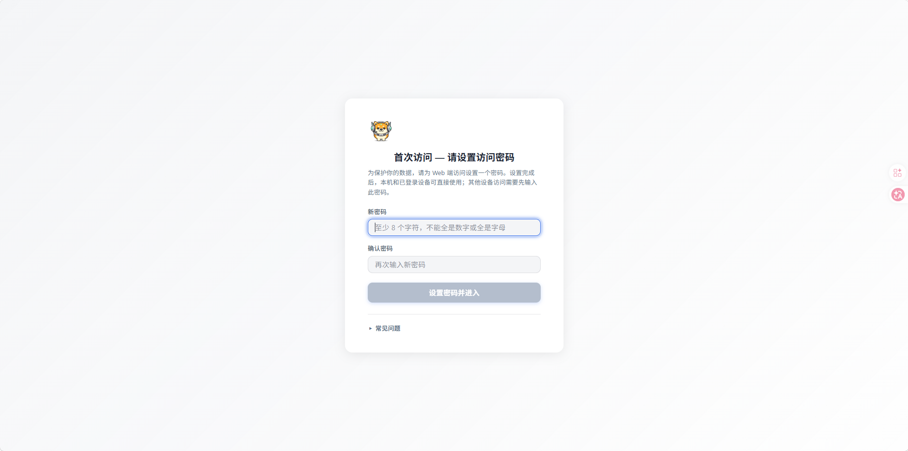
若密码遗忘，可以重新设置密码
export OPENAKITA_WEB_PASSWORD='<你的新密码>'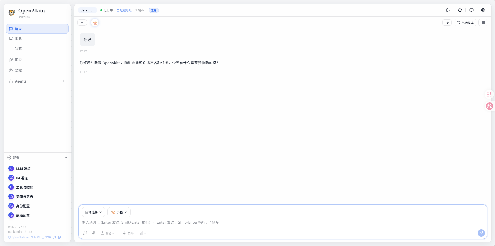
四、日常使用
每次新开会话后，需重新激活虚拟环境：
cd ~/openakita
source venv/bin/activate| 命令 | 说明 |
|---|---|
openakita | 交互模式 |
openakita run "任务描述" | 单次执行任务 |
openakita status | 查看状态 |
openakita selfcheck | 自检 |
openakita serve | 服务模式（如 IM 通道等，需已配置） |
openakita --help | 查看全部子命令 |
退出虚拟环境：
deactivate五、可选：官方一键脚本
若希望减少手动步骤，可使用官方 quickstart（同样可指定镜像）：
curl -fsSL -o quickstart.sh \
https://raw.githubusercontent.com/openakita/openakita/main/scripts/quickstart.sh
bash quickstart.sh --extras all \
--index-url https://mirrors.aliyun.com/pypi/simple/默认目录多为 ~/.openakita，与本文 ~/openakita 路径不同，二选一即可。
六、常见问题
1. 无法使用 sudo
确认当前用户是否在 sudo 组，或由 root 执行 apt 相关命令。
2. PPA 添加失败
检查网络与 DNS，重试 sudo apt update 后再执行 add-apt-repository。
3. python3.11：找不到该命令
确认 deadsnakes PPA 已添加，且 sudo apt install python3.11 执行成功。
4. pip 安装很慢或超时
继续使用阿里云镜像，或换清华源：
pip install "openakita[all]" -i https://pypi.tuna.tsinghua.edu.cn/simple5. API Key / 连接错误
- 确认
openakita init已完成，且.env或配置中有有效 Key - 国内访问部分 API 可能需要代理或兼容端点，可在配置中设置
ANTHROPIC_BASE_URL等
七、完整命令速查
# === 系统与 Python 3.11 ===
sudo apt update
sudo apt install -y software-properties-common
sudo add-apt-repository -y ppa:deadsnakes/ppa
sudo apt update
sudo apt install -y python3.11 python3.11-venv python3.11-dev python3-pip build-essential git curl
# === 项目与虚拟环境 ===
mkdir -p ~/openakita && cd ~/openakita
python3.11 -m venv venv
source venv/bin/activate
pip install -U pip setuptools wheel
# === 安装 OpenAkita ===
pip install "openakita[all]" \
-i https://mirrors.aliyun.com/pypi/simple/ \
--trusted-host mirrors.aliyun.com
# === 初始化与运行 ===
openakita init --quick
openakita
# === 测试 ===
openakita run "你好，介绍一下你自己"Linux Docker
一、环境要求
在 Ubuntu 22.04 LTS Server 上通过 Docker Compose 标准模式一键安装 OpenAkita。
| 项目 | 说明 |
|---|---|
| 系统 | Ubuntu 22.04 LTS Server（已联网） |
| 权限 | 具备 sudo 的普通用户 |
| API Key | 至少配置一个 LLM 提供商密钥 |
| 磁盘 | 推荐20 GB 及以上 |
二、安装步骤
1. 安装 Docker 和 Docker Compose
国内访问 download.docker.com 较慢，建议使用阿里云 Docker CE 源。
# 1. 安装依赖
sudo apt update
sudo apt install -y ca-certificates curl gnupg lsb-release
# 2. 添加 Docker GPG 密钥 (阿里云镜像)
sudo mkdir -p /etc/apt/keyrings
curl -fsSL https://mirrors.aliyun.com/docker-ce/linux/ubuntu/gpg | sudo gpg --dearmor -o /etc/apt/keyrings/docker.gpg
# 3. 设置 Docker 稳定版仓库 (阿里云镜像)
echo \
"deb [arch=$(dpkg --print-architecture) signed-by=/etc/apt/keyrings/docker.gpg] https://mirrors.aliyun.com/docker-ce/linux/ubuntu \
$(lsb_release -cs) stable" | sudo tee /etc/apt/sources.list.d/docker.list > /dev/null
# 4. 安装 Docker Engine 和 Docker Compose Plugin
sudo apt update
sudo apt install -y docker-ce docker-ce-cli containerd.io docker-buildx-plugin docker-compose-plugin
# 5. 验证安装
sudo docker run hello-world
sudo docker compose version2. 配置 Docker 镜像加速 (可选但推荐)
若拉取镜像超时，建议配置国内镜像加速。
sudo mkdir -p /etc/docker
sudo tee /etc/docker/daemon.json <<-'EOF'
{
"registry-mirrors": [
"https://docker.1ms.run",
"https://docker.m.daocloud.io"
]
}
EOF
sudo systemctl daemon-reload
sudo systemctl restart docker三、部署 OpenAkita
3.1 克隆项目
cd ~
# 完整克隆
git clone https://github.com/OpenAkita/OpenAkita.git
# 或：浅克隆（更快，只要最新版）
git clone --depth 1 https://github.com/openakita/openakita.git
cd OpenAkita3.2 配置环境变量
复制示例配置文件并根据需要修改：
cp examples/.env.example .env
# 使用 nano 或 vim 编辑 .env 文件
nano .env注意：请至少配置 LLM_API_KEY 或其他必要的模型提供商密钥。
DASHSCOPE_API_KEY=sk-你的密钥复制大模型端点配置文件并根据需要修改:
cp data/llm_endpoints.json.example data/llm_endpoints.json
nano data/llm_endpoints.json通义千问示例（主端点）：
在 endpoints 数组中加入或修改为类似配置：
"endpoints": [
{
"name": "dashscope-qwen3.5-plus",
"provider": "dashscope",
"api_type": "openai",
"base_url": "https://dashscope.aliyuncs.com/compatible-mode/v1",
"model": "qwen3.5-plus",
"priority": 10,
"max_tokens": 0,
"context_window": 200000,
"timeout": 180,
"rpm_limit": 0,
"capabilities": [
"text",
"vision",
"video",
"tools",
"thinking"
]
}
]3.3 启动服务
同步最新代码
git pull --rebase使用 Docker Compose 后台启动所有服务（前端、后端、数据库、向量库等）：
# 首次构建（不要用 --no-cache，否则会重复慢速 apt/npm，耗时很长）
sudo docker compose build
# 启动
sudo docker compose up -d补充：当前版本在 docker compose build 时，如果出现报错，可以构建前自动打补丁：
cd ~/openakita
grep -q 'providers.json /app/src/openakita/llm/registries/providers.json' Dockerfile || \
sed -i '/RUN npm ci/a COPY src/openakita/llm/registries/providers.json /app/src/openakita/llm/registries/providers.json' Dockerfile
# 确认补丁已写入
grep -n 'providers.json' Dockerfile应看到类似:
7:COPY src/openakita/llm/registries/providers.json /app/src/openakita/llm/registries/providers.json然后再执行:
sudo docker compose build
sudo docker compose up -d3.4 查看日志
确认服务启动正常：
sudo docker compose logs -f按 Ctrl+C 退出日志查看。
补充：构建成功后，若容器状态为 Restarting，日志出现：
Error: No such option: --host原因：镜像默认 CMD 为 openakita serve --host 0.0.0.0 --port 18900，但当前版本（如 1.27.12）的 serve 子命令不支持 --host / --port，应通过环境变量 API_HOST、API_PORT 配置（docker-compose.yml 已包含）。
方案 A：修改 docker-compose.yml（推荐，无需重新 build）
编辑 docker-compose.yml，在 openakita: 服务下、container_name: 附近增加：
command: ["serve"]或使用命令自动插入：
cd ~/openakita
grep -q 'command: \["serve"\]' docker-compose.yml || \
sed -i '/container_name: openakita/a\ command: ["serve"]' docker-compose.yml
sudo docker compose up -d方案 B：修改 Dockerfile（长期）
sed -i 's/CMD \["serve", "--host", "0.0.0.0", "--port", "18900"\]/CMD ["serve"]/' Dockerfile
# 然后需要重新 build
sudo docker compose build3.5 验证与健康检查
# 容器状态
sudo docker compose ps
# 健康检查（两个路径都试一下）
sudo curl http://127.0.0.1:18900/health
sudo curl http://127.0.0.1:18900/api/health四、访问 OpenAkita
部署完成后，在浏览器中访问：
- 地址：
http://<虚拟机IP>:18900（默认端口，具体见.env中的FRONTEND_PORT）
若密码遗忘，可以重新设置密码
export OPENAKITA_WEB_PASSWORD='<你的新密码>'五、常用管理命令
停止服务
sudo docker compose down重启服务
sudo docker compose restart更新版本
git pull
sudo docker compose up -d --build查看容器状态
sudo docker compose ps六、故障排查
端口冲突
如果对应端口被占用，请在 .env 中修改 FRONTEND_PORT 和 BACKEND_PORT，然后重启。
权限问题
如果遇到 Permission denied，请确保当前用户在 docker 组中：
sudo usermod -aG docker $USER
newgrp docker内存不足
OpenAkita 包含多个组件，建议服务器至少拥有 4GB+ 内存。
Linux GUI
1、前置条件
- 官网地址：openakita.ai/download
- LLM API Key：OpenAkita 本身是一个框架，需要连接大模型才能思考。如果没有 API Key，可以前往对应官网注册（如阿里云、DeepSeek、Anthropic 等）
2、下载安装包
根据你的操作系统下载对应的安装包，教程以 Ubuntu 22.04 Desktop、OpenAkita v1.27.12 版本为例。
下载步骤：
- 打开浏览器，访问 OpenAkita 官网下载地址
- 根据你的操作系统下载对应的安装包，点击下载
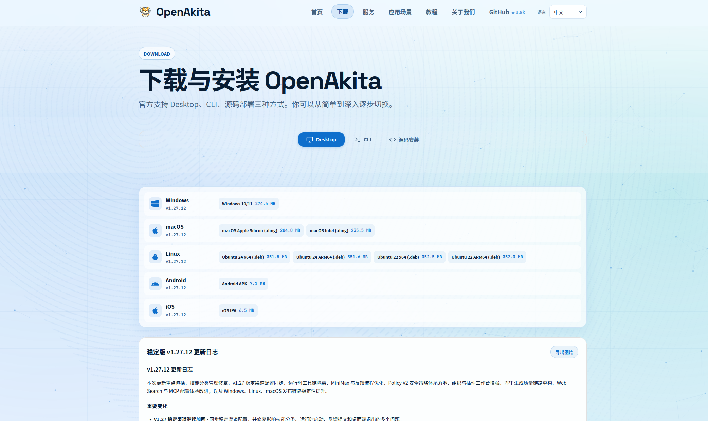
3、正式安装
安装步骤：
方式 A：图形化安装（推荐新手）
- 找到刚刚下载的 .deb 文件
- 双击文件，系统会自动打开「软件安装」窗口
- 点击「安装」按钮，输入你的用户密码即可
方式 B：命令行安装（更稳定）
- 打开终端（Terminal），进入下载目录（通常是
~/Downloads） - 执行以下命令：
cd ~/Downloads
sudo apt install ./OpenAkitaDesktop_1.27.12_ubuntu22-amd64.deb4、启动与配置
- 在应用菜单中搜索 OpenAkita 并启动
- 首次启动会弹出配置向导，按照提示配置你的 LLM API Key（如 DeepSeek、Anthropic、OpenAI 等）
- 配置完成后，即可开始使用桌面版 OpenAkita
4.1 初次配置（配置向导）
配置步骤：
- 欢迎使用 OpenAkita 页面，点击「开始配置」
- 确认使用风险，输入"我已知晓"
- 配置 LLM 端点：你至少需要添加 1 个 LLM 端点 才能开始使用。
- 点击 LLM 中的「添加端点」
- 选择服务商，填写 API Key
- 点击「重新拉取」，选择模型
- 点击「添加端点」
- 配置 IM 通道：暂时可不填，直接跳过
- 终端命令与系统设置：根据需求设置，点击「下一步」
- 配置完成，进入 OpenAkita 会自动启动服务
- 切换到聊天页面，即可开始使用
注意：可在配置向导页面选择暂不配置 LLM 和 IM 通道，进入 OpenAkita 后再进行配置。
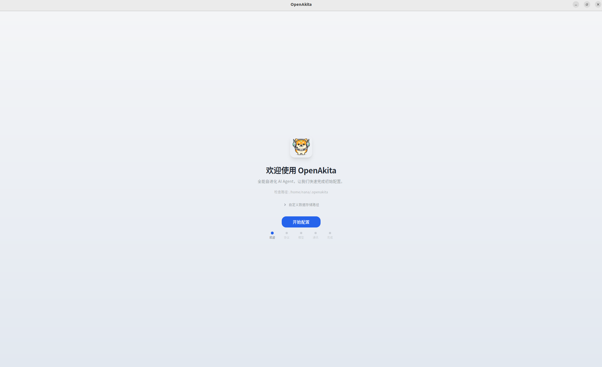
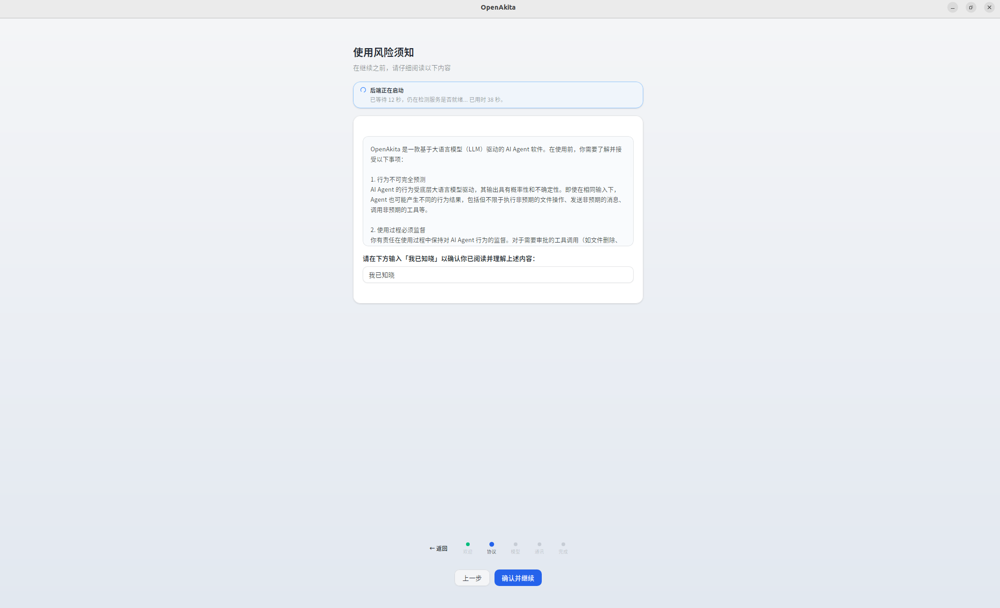
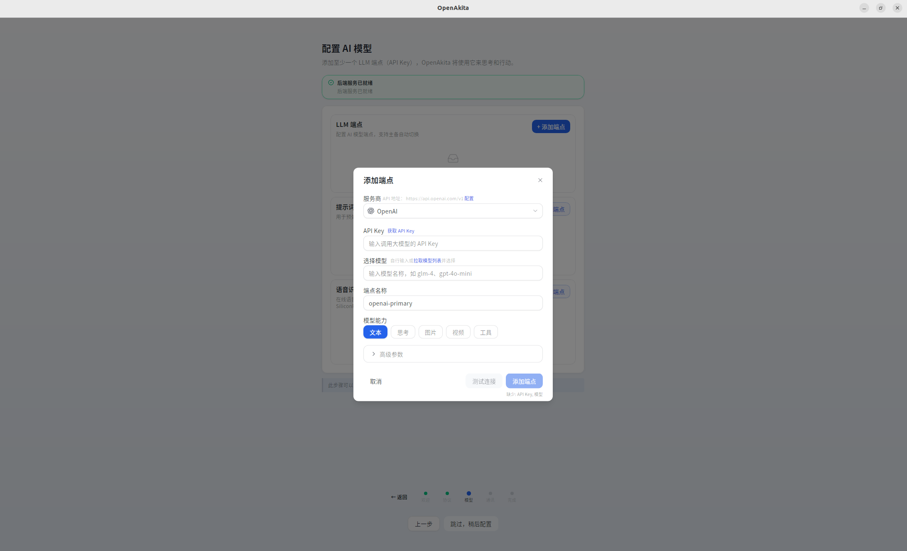
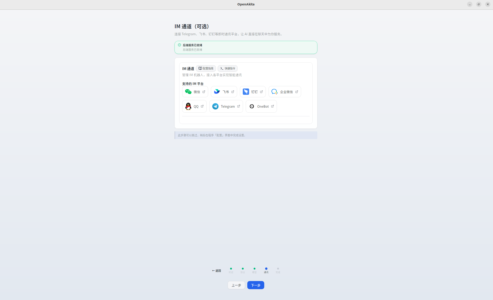
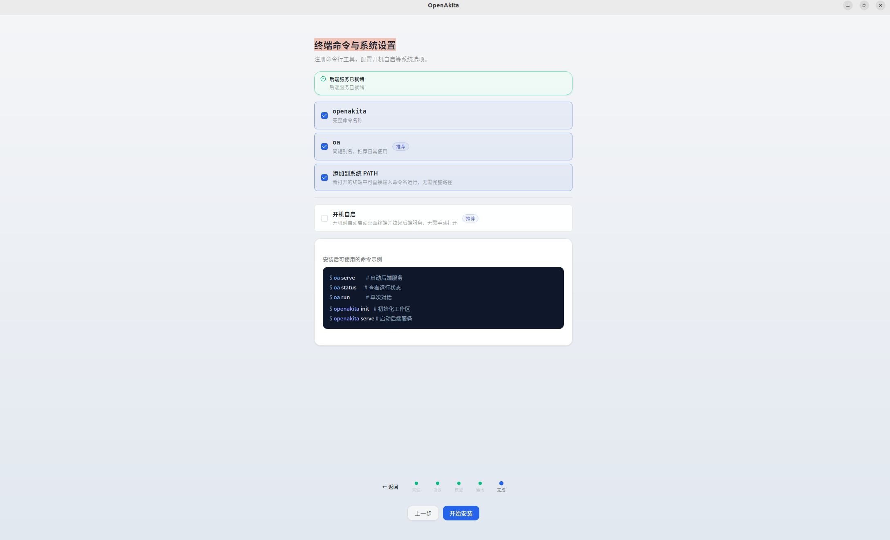
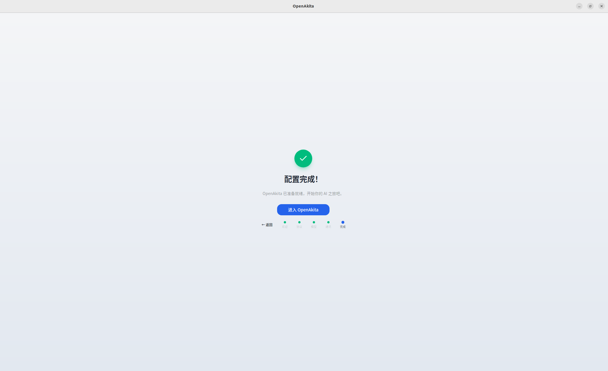
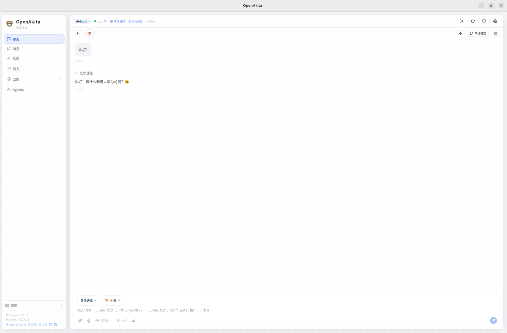
4.2 完整配置
完整配置提供对各功能模块的精细控制，适合需要自定义 LLM 端点、接入 IM 通道、调整 Agent 行为等的用户。
4.2.1 LLM 端点配置（必填）
LLM 端点是 OpenAkita 调用大语言模型的入口。你可以配置多个端点，系统会根据优先级和可用性自动选择。
添加主端点：点击「+ 添加端点」按钮，打开端点配置对话框
| 字段 | 说明 | 示例 |
|---|---|---|
| 服务商 | 选择 LLM 服务提供商 | 通义千问、OpenAI、Anthropic 等 |
| Base URL | API 接口地址（选择服务商后自动填充） | https://dashscope.aliyuncs.com/compatible-mode/v1 |
| API Key | 你的 API 密钥 | sk-xxxxx |
| 模型 | 选择或输入模型名称（支持在线拉取模型列表） | qwen-max、gpt-4o |
| 端点名称 | 自动生成，也可自定义 | dashscope-qwen-max |
| 能力标签 | 勾选该模型支持的能力 | text、thinking、vision、tools |
高级参数：
| 字段 | 默认值 | 说明 |
|---|---|---|
| API Type | openai | 接口类型，openai 或 anthropic |
| Key 环境变量名 | 自动生成 | API Key 在 .env 中的变量名 |
| 优先级 | 0 | 数值越小优先级越高 |
支持的服务商
国内服务商：
| 服务商 | API 类型 | 默认 Base URL |
|---|---|---|
| 通义千问（DashScope） | openai | https://dashscope.aliyuncs.com/compatible-mode/v1 |
| 智谱 AI | openai | https://open.bigmodel.cn/api/paas/v4 |
| 百度千帆 | openai | https://qianfan.baidubce.com/v2 |
| DeepSeek | openai | https://api.deepseek.com/v1 |
| 月之暗面（Kimi） | openai | https://api.moonshot.cn/v1 |
| 零一万物 | openai | https://api.lingyiwanwu.com/v1 |
| 字节豆包（火山引擎） | openai | https://ark.cn-beijing.volces.com/api/v3 |
| SiliconFlow | openai | https://api.siliconflow.cn/v1 |
国际服务商：
| 服务商 | API 类型 | 默认 Base URL |
|---|---|---|
| OpenAI | openai | https://api.openai.com/v1 |
| Anthropic | anthropic | https://api.anthropic.com |
| Google Gemini | openai | https://generativelanguage.googleapis.com/v1beta/openai |
| Groq | openai | https://api.groq.com/openai/v1 |
| Mistral | openai | https://api.mistral.ai/v1 |
| OpenRouter | openai | https://openrouter.ai/api/v1 |
多端点与 Failover
OpenAkita 支持配置多个端点，提供自动故障转移能力：
- 优先级调度：优先使用 Priority 值最小的端点
- 自动降级：主端点不可用时自动切换到备用端点
- 健康检查：后台定期检测端点可用性
- 冷却机制：连续失败的端点会被临时冷却，避免反复重试
建议：至少配置 2 个端点（不同服务商），以确保高可用性。
编译器端点（可选）
编译器端点用于代码编译、格式化等辅助任务。如果不配置，系统会使用主端点。
语音识别端点（可选）
用于在线语音识别，支持 OpenAI Whisper / DashScope Qwen-ASR / Groq / SiliconFlow 等。
4.2.2 IM 通道
IM 通道让你可以通过即时通讯工具与 OpenAkita 对话。所有通道均为可选配置。
微信
| 字段 | 说明 |
|---|---|
| 启用 | 引导创建 Bot——选择微信 |
| Token | 扫码创建机器人，可以直接填入 |
飞书
| 字段 | 说明 |
|---|---|
| 启用 | 引导创建 Bot——选择飞书 |
| App ID | 飞书开放平台自建应用的 App ID（扫码创建机器人，可以直接填入） |
| App Secret | 飞书开放平台自建应用的 App Secret（扫码创建机器人，可以直接填入） |
接入方式：自建应用，无需公网 IP。在飞书开放平台创建应用并获取凭证。
钉钉
| 字段 | 说明 |
|---|---|
| 启用 | 引导创建 Bot——选择钉钉 |
| Client ID | 钉钉开放平台企业内部应用的 Client ID |
| Client Secret | 钉钉开放平台企业内部应用的 Client Secret |
接入方式：企业内部应用，无需公网 IP。在钉钉开放平台创建应用。
企业微信
| 字段 | 说明 |
|---|---|
| 启用 | 引导创建 Bot——选择企业微信 |
| Bot ID | 扫码创建机器人，可以直接填入 |
| Secret | 扫码创建机器人，可以直接填入 |
| 字段 | 说明 |
|---|---|
| 启用 | 引导创建 Bot——选择 QQ |
| App ID | 扫码创建机器人，可以直接填入 |
| App Secret | 扫码创建机器人，可以直接填入 |
Telegram
| 字段 | 说明 |
|---|---|
| 启用 | 引导创建 Bot——选择 Telegram |
| Bot Token | 从 @BotFather 获取的 Bot Token |
| 代理 | HTTP 代理地址（国内用户通常需要），如 http://127.0.0.1:7890 |
| 配对验证 | 是否要求用户输入配对码才能使用 |
| 配对码 | 自定义的配对验证码 |
| Webhook URL | 使用 Webhook 模式时填写，留空则使用 Long Polling |
4.2.3 工具与技能
此步骤配置 OpenAkita 可以使用的工具和技能扩展。
MCP 工具
MCP（Model Context Protocol）允许 OpenAkita 通过标准化协议调用外部工具。
| 配置项 | 默认值 | 说明 |
|---|---|---|
| MCP 总开关 | 开启 | 是否启用 MCP 工具 |
| 超时 | 60 秒 | MCP 工具调用超时时间 |
数据库工具（可选）：
| 配置项 | 说明 |
|---|---|
| MySQL | 启用后配置 Host、User、Password、Database |
| PostgreSQL | 启用后配置连接 URL |
Skills 管理
Skills 是可插拔的技能扩展，包括：
- 系统技能：内置技能（只读）
- 外部技能：用户安装的第三方技能，可单独启用/禁用
桌面自动化
桌面自动化让 OpenAkita 可以操作你的电脑桌面（截图、点击、输入等）。
| 配置项 | 默认值 | 说明 |
|---|---|---|
| 桌面自动化 | 开启 | 总开关 |
| 默认显示器 | 0 | 多显示器时指定主屏幕 |
| 最大宽度 | 1920 | 截图最大宽度 |
| 最大高度 | 1080 | 截图最大高度 |
高级选项：
| 配置项 | 默认值 | 说明 |
|---|---|---|
| 压缩质量 | 85 | 截图 JPEG 质量 |
| 视觉识别 | 开启 | 使用视觉模型辅助桌面操作 |
| 视觉模型 | qwen3-vl-plus | 视觉识别使用的模型 |
| OCR 模型 | qwen-vl-ocr | OCR 使用的模型 |
| 点击延迟 | 0.1 秒 | 每次点击后的等待时间 |
| 输入间隔 | 0.03 秒 | 逐字输入的间隔 |
4.2.4 灵魂与意志
灵魂（Soul）
人格选择：OpenAkita 内置多种预设角色人格
| 角色 | 风格 | 适用场景 |
|---|---|---|
| 默认助手 | 专业友好、平衡得体 | 日常使用，万能型 |
| 商务顾问 | 正式专业、数据驱动 | 工作场景，正式汇报 |
| 技术专家 | 简洁精准、代码导向 | 编程开发，技术问答 |
| 私人管家 | 周到细致、礼貌正式 | 生活服务，日程安排 |
| 虚拟女友 | 温柔体贴、情感丰富 | 情感陪伴，倾听关怀 |
| 虚拟男友 | 阳光开朗、幽默风趣 | 情感陪伴，轻松有趣 |
| 家人 | 亲切关怀、唠叨温暖 | 家庭场景，长辈式关怀 |
| 贾维斯 | 冷静睿智、英式幽默 | 科技极客，AI 管家 |
| 自定义 | 用户自定义角色 ID | 进阶用户，DIY 人格 |
自我认识：
| 配置项 | 默认值 | 说明 |
|---|---|---|
| Agent 名称 | OpenAkita | Agent 的显示名称 |
| 最大迭代次数 | 300 | 单次任务的最大执行步数 |
| 思考模式 | auto | auto（自动）/ always（总是）/ never（关闭） |
| 自动确认 | false | 是否跳过用户确认直接执行工具 |
记忆管理：
| 配置项 | 默认值 | 说明 |
|---|---|---|
| 记忆管理 | 开启 | Agent 会记住你说过的话和偏好 |
LLM 智能审查：将由大模型逐条审查所有记忆，删除垃圾、合并重复，此操作可能需要较长时间，请耐心等待。
意志（Will）
| 字段 | 默认值 | 说明 |
|---|---|---|
| 主动任务 | 启用 | 让 Agent 像真人一样主动找你聊天 |
| 每日最大消息 | 3 | 每天主动消息数量上限 |
| 最短间隔时间 | 120 | 两条主动消息之间的最短间隔（分钟） |
| 空闲阈值 | 24 | 用户空闲超过此时长后才触发主动消息 |
| 安静开始（时） | 23 | 不发送主动消息的开始时间 |
| 安静结束（时） | 7 | 免打扰时段结束（24h 制） |
| 表情包 | 关闭 | 是否在对话中使用表情包 |
| 表情包目录 | data/sticker | 表情包数据存储路径 |
| 字段 | 默认值 | 说明 |
|---|---|---|
| 计划任务 | 启用 | 定时让 Agent 自动执行指定任务 |
| 时区 | Asia/Shanghai | 计划任务使用的时区 |
4.2.5 高级配置
桌面通知配置：
| 配置项 | 默认值 | 说明 |
|---|---|---|
| 任务完成通知 | OFF | 任务完成时弹出系统桌面通知提醒 |
| 通知提示音 | OFF | 桌面通知时播放系统提示音 |
会话配置：
| 配置项 | 默认值 | 说明 |
|---|---|---|
| 会话超时 | 30 分钟 | 无活动后自动结束会话 |
| 最大历史 | 50 条 | 单个会话保留的消息数 |
| 存储路径 | data/sessions | 会话数据存储目录 |
日志配置：
| 配置项 | 默认值 | 说明 |
|---|---|---|
| 日志级别 | DEBUG | DEBUG / INFO / WARNING / ERROR |
| 日志目录 | logs | 日志文件存储目录 |
| 数据库路径 | data/agent.db | SQLite 数据库路径 |
| 单文件大小 | 10 MB | 日志文件最大体积 |
| 备份数量 | 30 | 保留的日志备份数 |
| 保留天数 | 30 | 日志保留天数 |
| 控制台输出 | 关闭 | 是否输出日志到控制台 |
| 文件输出 | 关闭 | 是否写入日志文件 |
网络与安全：
| 配置项 | 默认值 | 说明 |
|---|---|---|
| 允许外部访问（局域网/公网） | 关闭 | 开启后监听 0.0.0.0，允许其他设备通过 IP 访问 Web 端 |
| 反向代理模式（Nginx/Caddy） | 关闭 | 通过反向代理部署时必须开启，开启后读取 X-Forwarded-For 获取真实 IP |
平台与云服务：
| 配置项 | 默认值 | 说明 |
|---|---|---|
| 平台连接（Agent Hub / Skill Store） | https://openakita.ai/api | 配置 OpenAkita 远程平台地址 |
数据与备份：
| 配置项 | 默认值 | 说明 |
|---|---|---|
| 定时备份 | 关闭 | 配置自动备份的路径、频率和备份内容 |
| 备份存储位置 | / | 配置备份存储的路径 |
| 保留最近备份数 | 5 | 配置保留最近的备份数量 |
| 包含用户数据（对话记忆、会话等） | 开启 | 是否开启用户数据的备份 |
| 包含媒体文件（图片、语音等） | 关闭 | 是否开启媒体文件的备份 |
- 手动备份与还原：可以立即创建备份或者从已有备份还原工作区数据
- 工作区迁移：将
.openakita数据目录迁移到其他位置
4.2.6 多 Agent 模式
| 配置项 | 默认值 | 说明 |
|---|---|---|
| 多 Agent 模式 | 关闭 | 多 Agent 协作模式 |
4.2.7 完成
配置完成后，点击「应用并重启」，即可启动服务。
所有配置项均通过工作区的 .env 文件管理，路径：~/.openakita/workspaces/{workspace_id}/.env